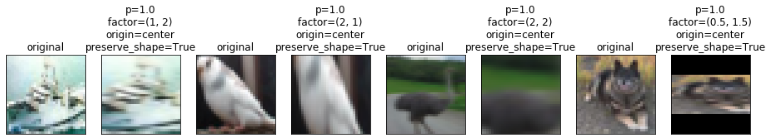
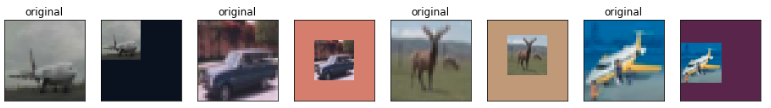
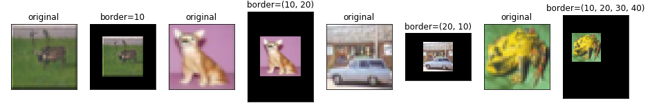
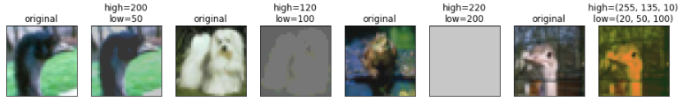
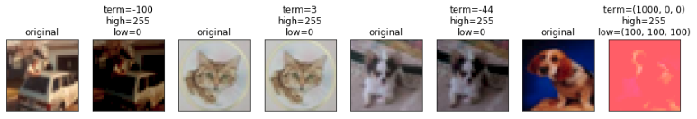
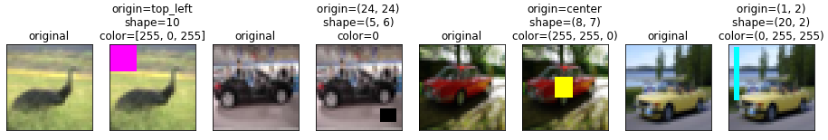

Batch class for handling images¶
ImagesBatch class handles 2D images and their labels. Images are stored as PIL.Image (usually) or np.ndarray.
Components¶
The class has two components: images and labels.
Conversion between formats¶
Almost all actions in the batch work with PIL images. If dataset contains np.ndarray images, just call to_pil method to convert them inside batch.
To convert images to np.ndarray use to_array (this must be done, for example, before passing images to a tensorflow model).
Augmentation¶
ImagesBatch provides typical augmentation actions, for example:
crop– crop rectangular area from an image
flip– flip an image (left to right or upside down)
scale– scale an image (stretch or tie)- 
put_on_background– put an image on a given background- 
resize– resize an image a to the given shape
pad– add constant values to the border of an image (enlarging the last’s shape)- 
invert– invert given channels in an image
salt– set pixels in random positions to given colour
clip– truncate pixels’ values- 
multiply– multiply an image by the given number
multiplicative_noise– add multiplicative noise to an image
add– add given term to an image- 
additive_noise– add additive noise an image
posterize– posterize an image
cutout– add colored rectangular areas to an image- 
elastic_transform– add colored rectangular areas to an image
Perhaps, any function from scipy.ndimage is accesible as sp_<method_name>. Just use it as a usual action (without specifying input parameter). Note that they only works with scipy.ndarray and usually much slower than respective PIL methods.
.. note:: All these methods can be executed for randomly sampled images from a batch. You just need to specify p parameter when calling an action (probability of applying an action to an image).
Note
Use R() or P(R()) named expressions to sample an argument for actions. In the first case the argument will be sampled for all images in a batch. If P(R()) is passed then the argument will be sampled for each image.
Examples:
All images in a batch are rotated by 10 degrees:
...
(Pipeline().
...
.rotate(angle=10)
...
All images in a batch are rotated by the common angle sampled from the normal distribution
...
(Pipeline().
...
.rotate(angle=R('normal', loc=0, scale=1))
...
Each image in a batch are rotated by its own sampled angle
...
(Pipeline().
...
.rotate(angle=P(R('normal', loc=0, scale=1)))
...
Rotate each image with probability 0.7 by its own sampled angle
...
(Pipeline().
...
.rotate(angle=P(R('normal', loc=0, scale=1)), p=0.7)
...
See more details in the augmentation tutorial.
transform_actions decorator¶
This decorator finds all defined methods whose names starts with user-defined suffix and prefix and
decorates them with wrapper which is an argument too.
- For example, there are two wrapper functions defined in
Batch:
And, by default, all methods that start with ‘_’ and end with ‘_’ are wrapped with the first mentioned method and those ones that start with ‘_’ and end with ‘_all’ are wrapped by the second one.
Defining custom actions¶
There are 3 ways to define an action:
- By writting a classic
actionlike inBatch- By writing a method that takes
imageas the first argument and returns transformed one. Method’s name must be surrounded by unary ‘_’.- By writing a method that takes nd.array of
imagesas the first argument andindicesas the second. This method transformsimages[indices]and returnsimages. Method’s name must start with ‘_’ and end with ‘_all’.
Note
In the last two approaches, actual action’s name doesn’t include mentioned suffices and prefixes. For example, if you define method _method_name_ then in a pipeline you should call method_name. For more details, see below.
Note
Last two methods’ names must not be surrounded by double ‘_’ (like __init__) otherwise they will be ignored.
Let’s take a closer look on the two last approaches:
_method_name_¶
It must have the following signature:
_method_name_(image, ...)
This method is actually wrapped with apply_transform(). And (usually) executed in parallel for each image.
Note
If you define these actions in a child class then you must decorate it with @transform_actions(prefix='_', suffix='_', wrapper='apply_transform')
Example:
@transform_actions(prefix='_', suffix='_', wrapper='apply_transform')
class MyImagesBatch(ImagesBatch):
...
def _flip_(image, mode):
""" Flips an image.
"""
if mode == 'lr':
return PIL.ImageOps.mirror(image)
return PIL.ImageOps.flip(image)
...
To use this action in a pipeline you must write:
...
(Pipeline().
...
.flip(mode='lr')
...
Note
Note that prefix ‘_’ and suffix ‘_’ are removed from the action’s name.
Note
All actions written in this way can be applied with given probability to every image. To achieve this, pass parameter p to an action, like flip(mode='lr', p=0.5)
Note
These actions are performed for every image each in its own thread. To change it (for example, execute in asynchronous mode), pass parameter target (.flip(mode='lr', target='a')). For more detail, see parallel.
_method_name_all¶
It must have the following signature:
_method_name_all(images, indices, ...)
This method is actually wrapped with apply_transform_all(). And executed once with the whole batch passed. indices parameter declares images that must be transformed (it is needed, for example, if you want to perform action only to the subset of the elements. See below for more details)
Note
If you define these actions in a child class then you must decorate it with @transform_actions(prefix='_', suffix='_all', wrapper='apply_transform_all')
Example:
@transform_actions(prefix='_', suffix='_', wrapper='apply_transform_all')
class MyImagesBatch(ImagesBatch):
...
def _flip_all(self, images=None, indices=[0], mode='lr'):
""" Flips images at given indices.
"""
for ind in indices:
if mode == 'lr':
images[ind] = PIL.ImageOps.mirror(images[ind])
images[ind] = PIL.ImageOps.flip(images[ind])
return images
...
To use this action in a pipeline you must write:
...
(Pipeline().
...
.flip(mode='lr')
...
Note
Note that prefix ‘_’ and suffix ‘_all’ are removed from the action’s name.
Note
All actions written in this way can be applied with given probability to every image. To achieve this, pass parameter p to an action, like flip(mode='lr', p=0.5)
Note
These actions are performed once for all batch. Please note that you can’t pass P(R()) named expression as an argument.
Assembling after parallel execution¶
Note that if images have different shapes after an action then there are two ways to tackle it:
- Do nothing. Then images will be stored in np.ndarray with dtype=object.
- Pass preserve_shape=True to an action which changes the shape of an image. Then image is cropped from the left upper corner (unless action has origin parameter).
Cropping to patches¶
If you have a very big image then you can compose little patches from it.
See split_to_patches and tutorial for more details.